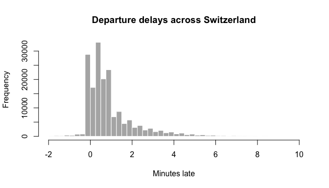

GTFS Realtime is the format transit agencies use to publish live data: delays, cancellations, alerts. It is plain Protocol Buffers. This article reads the live feed of all public transport in Switzerland, from opentransportdata.swiss, and turns it into tables of trips and stop delays.
The output below comes from a run on 27 October 2026 at 15:36 CET. The code is not run when the site is built.
What you need
-
An API key. Register at opentransportdata.swiss and subscribe to the GTFS Realtime API in its API Manager. Put the key in
.Renviron, so it stays out of your code: protoc, the protobuf compiler, to turn the schema into a descriptor set. zuproto itself does not need it. On macOS,brew install protobuf; on Debian and Ubuntu,apt install protobuf-compiler.
The schema
The schema is gtfs-realtime.proto, from Google’s transit repository.
protoc compiles it into a descriptor set, which is what
zuproto reads.
dir <- tempfile("gtfs-rt-")
dir.create(dir)
proto <- file.path(dir, "gtfs-realtime.proto")
desc <- file.path(dir, "gtfs-realtime.binpb")
download.file(
paste0(
"https://raw.githubusercontent.com/google/transit/",
"474750a163088673df718838d4a1bb093391f9af/",
"gtfs-realtime/proto/gtfs-realtime.proto"
),
proto,
quiet = TRUE
)
system2("protoc", c(
paste0("--proto_path=", dir),
paste0("--descriptor_set_out=", desc),
proto
))A pool holds the message types. The GTFS Realtime types join the well-known types every pool starts with.
pool <- proto_pool(desc)
pool
#> <proto_pool: 12 files, 89 message types>
proto_fields(pool, "transit_realtime.TripUpdate")
#> name number type label
#> 1 trip 1 message required
#> 2 vehicle 3 message optional
#> 3 stop_time_update 2 message repeated
#> 4 timestamp 4 uint64 optional
#> 5 delay 5 int32 optional
#> 6 trip_properties 6 message optional
#> type_name oneof json_name presence
#> 1 transit_realtime.TripDescriptor <NA> trip TRUE
#> 2 transit_realtime.VehicleDescriptor <NA> vehicle TRUE
#> 3 transit_realtime.TripUpdate.StopTimeUpdate <NA> stopTimeUpdate FALSE
#> 4 <NA> <NA> timestamp TRUE
#> 5 <NA> <NA> delay TRUE
#> 6 transit_realtime.TripUpdate.TripProperties <NA> tripProperties TRUE
#> packed map extension
#> 1 FALSE FALSE FALSE
#> 2 FALSE FALSE FALSE
#> 3 FALSE FALSE FALSE
#> 4 FALSE FALSE FALSE
#> 5 FALSE FALSE FALSE
#> 6 FALSE FALSE FALSEThe feed
The trip updates feed is one FeedMessage covering the
whole country. The key goes in an Authorization header.
feed <- file.path(dir, "trip-updates.binpb")
download.file(
"https://api.opentransportdata.swiss/la/gtfs-rt",
feed,
mode = "wb",
quiet = TRUE,
headers = c(
Authorization = paste("Bearer", Sys.getenv("OPENTRANSPORTDATA_API_KEY"))
)
)
file.size(feed)
#> [1] 9402533One message as a list
proto_decode() turns the message into a named list.
Enums become factors, and fields the feed does not set are left out.
msg <- proto_decode(feed, "transit_realtime.FeedMessage", pool)
str(msg$header)
#> List of 4
#> $ gtfs_realtime_version: chr "2.0"
#> $ incrementality : Factor w/ 2 levels "FULL_DATASET",..: 1
#> $ timestamp : num 1.79e+09
#> $ feed_version : chr "20261024"The header’s timestamp is POSIX time, as a
uint64. It is not a well-known Timestamp, so
zuproto leaves it as a number:
.POSIXct(msg$header$timestamp, tz = "Europe/Zurich")
#> [1] "2026-10-27 15:36:18 CET"feed_version names the GTFS static release that the trip
and stop IDs refer to.
Each element of entity is one trip:
length(msg$entity)
#> [1] 15576
str(msg$entity[[1]])
#> List of 2
#> $ id : chr ".ojp-91-71A.1.TA.117.j26|20261027"
#> $ trip_update:List of 2
#> ..$ trip :List of 5
#> .. ..$ trip_id : chr ".ojp-91-71A.1.TA.117.j26"
#> .. ..$ route_id : chr "91-71A-j26-1"
#> .. ..$ start_time : chr "06:57:00"
#> .. ..$ start_date : chr "20261027"
#> .. ..$ schedule_relationship: Factor w/ 8 levels "SCHEDULED","ADDED",..: 1
#> ..$ stop_time_update:List of 1
#> .. ..$ :List of 4
#> .. .. ..$ stop_sequence : num 1
#> .. .. ..$ stop_id : chr "8775605"
#> .. .. ..$ departure :List of 1
#> .. .. .. ..$ delay: int 0
#> .. .. ..$ schedule_relationship: Factor w/ 4 levels "SCHEDULED","SKIPPED",..: 1Trips as a data frame
A list of 15,000 trips is awkward to work with.
proto_decode_df() with field = "entity" makes
the repeated entity field the rows of a data frame. Nested
messages become data frame columns, built column by column in C.
system.time(
entities <- proto_decode_df(
feed,
"transit_realtime.FeedMessage",
pool,
field = "entity"
)
)
#> user system elapsed
#> 0.662 0.015 0.678
trips <- entities$trip_update
head(trips$trip[c("trip_id", "route_id", "start_time")])
#> trip_id route_id start_time
#> 1 .ojp-91-71A.1.TA.117.j26 91-71A-j26-1 06:57:00
#> 2 .ojp-91-71A.1.TA.136.j26 91-71A-j26-1 06:57:00
#> 3 .ojp-92-9-L.1.TA.1895.j26 92-9-L-j26-1 08:41:00
#> 4 .ojp-92-9-L.1.TA.5119.j26 92-9-L-j26-1 09:45:00
#> 5 .ojp-91-1-D.1.TA.2450.j26 91-1-D-j26-1 11:07:00
#> 6 .ojp-91-71B.1.TA.143.j26 91-71B-j26-1 11:15:00schedule_relationship is a factor, so counting cancelled
and added trips is a table():
table(trips$trip$schedule_relationship)
#>
#> SCHEDULED ADDED UNSCHEDULED CANCELED REPLACEMENT DUPLICATED
#> 15187 245 0 144 0 0
#> DELETED NEW
#> 0 0Delays at each stop
stop_time_update is a repeated message, so each row
holds a data frame of that trip’s stops. Swiss stop IDs are mostly
SLOIDs (ch:1:sloid:…), with some older numeric IDs.
str(trips$stop_time_update[[3]])
#> 'data.frame': 30 obs. of 7 variables:
#> $ stop_sequence : num 1 2 3 4 5 6 7 8 9 11 ...
#> $ stop_id : chr "ch:1:sloid:9321:0:714096" "ch:1:sloid:9319:0:585873" "ch:1:sloid:9315:0:466337" "ch:1:sloid:92711:0:37662" ...
#> $ arrival :'data.frame': 30 obs. of 4 variables:
#> ..$ delay : int NA 21882 21888 21864 21912 21864 21894 21870 21846 21840 ...
#> ..$ time : num NA NA NA NA NA NA NA NA NA NA ...
#> ..$ uncertainty : int NA NA NA NA NA NA NA NA NA NA ...
#> ..$ scheduled_time: num NA NA NA NA NA NA NA NA NA NA ...
#> $ departure :'data.frame': 30 obs. of 4 variables:
#> ..$ delay : int 21900 21882 21888 21864 21912 21864 21894 21870 21846 21840 ...
#> ..$ time : num NA NA NA NA NA NA NA NA NA NA ...
#> ..$ uncertainty : int NA NA NA NA NA NA NA NA NA NA ...
#> ..$ scheduled_time: num NA NA NA NA NA NA NA NA NA NA ...
#> $ departure_occupancy_status: Factor w/ 9 levels "EMPTY","MANY_SEATS_AVAILABLE",..: NA NA NA NA NA NA NA NA NA NA ...
#> $ schedule_relationship : Factor w/ 4 levels "SCHEDULED","SKIPPED",..: 1 1 1 1 1 1 1 1 1 1 ...
#> $ stop_time_properties : logi NA NA NA NA NA NA ...A message field that no stop of a trip sets, such as
arrival at a first stop, is an all-NA column
rather than a data frame. A small helper covers both cases when pulling
out the delays:
delay <- function(stops, event) {
x <- stops[[event]]
if (is.data.frame(x)) x$delay else rep(NA_integer_, nrow(stops))
}
updates <- trips$stop_time_update
n <- vapply(updates, nrow, integer(1))
stops <- data.frame(
trip_id = rep(trips$trip$trip_id, n),
stop_id = unlist(lapply(updates, `[[`, "stop_id")),
arrival_delay = unlist(lapply(updates, delay, "arrival")),
departure_delay = unlist(lapply(updates, delay, "departure"))
)
nrow(stops)
#> [1] 190161
head(stops)
#> trip_id stop_id arrival_delay
#> 1 .ojp-91-71A.1.TA.117.j26 8775605 NA
#> 2 .ojp-91-71A.1.TA.136.j26 8775605 NA
#> 3 .ojp-92-9-L.1.TA.1895.j26 ch:1:sloid:9321:0:714096 NA
#> 4 .ojp-92-9-L.1.TA.1895.j26 ch:1:sloid:9319:0:585873 21882
#> 5 .ojp-92-9-L.1.TA.1895.j26 ch:1:sloid:9315:0:466337 21888
#> 6 .ojp-92-9-L.1.TA.1895.j26 ch:1:sloid:92711:0:37662 21864
#> departure_delay
#> 1 0
#> 2 0
#> 3 21900
#> 4 21882
#> 5 21888
#> 6 21864Delays are in seconds. Most departures are within a minute or two of schedule:
minutes <- stops$departure_delay / 60
minutes <- minutes[!is.na(minutes) & minutes >= -2 & minutes <= 10]
hist(
minutes,
breaks = seq(-2, 10, by = 0.25),
main = "Departure delays across Switzerland",
xlab = "Minutes late",
col = "grey70",
border = "white"
)
plot of chunk delays
As JSON
proto_to_json() writes protobuf’s canonical JSON. Here
is one trip, encoded back to binary from its list form first:
one <- proto_encode(msg$entity[[2]], "transit_realtime.FeedEntity", pool)
cat(proto_to_json(one, "transit_realtime.FeedEntity", pool))
#> {"id":".ojp-91-71A.1.TA.136.j26|20261027","tripUpdate":{"trip":{"tripId":".ojp-91-71A.1.TA.136.j26","startTime":"06:57:00","startDate":"20261027","scheduleRelationship":"SCHEDULED","routeId":"91-71A-j26-1"},"stopTimeUpdate":[{"stopSequence":1,"departure":{"delay":0},"stopId":"8775605","scheduleRelationship":"SCHEDULED"}]}}The same mapping for the whole feed is about three times the size of the binary:
nchar(proto_to_json(feed, "transit_realtime.FeedMessage", pool)) /
file.size(feed)
#> [1] 3.063439Notes
- The limit is two requests a minute per key. The feed is refreshed every 30 seconds, so polling faster gains nothing.
- Service alerts are a separate feed with a separate subscription.
They use the same schema: decode them as
transit_realtime.FeedMessagetoo. - transport.opendata.ch serves the same timetable data as JSON, if you would rather not handle protobuf.